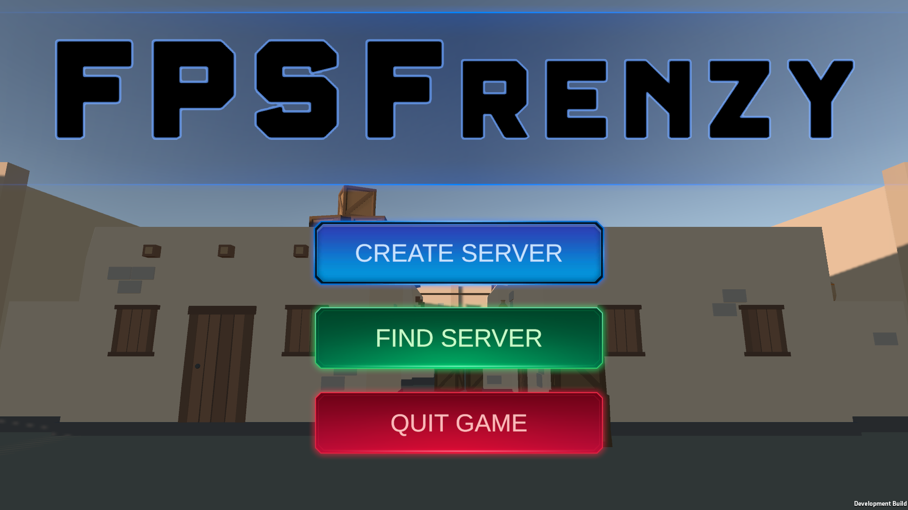
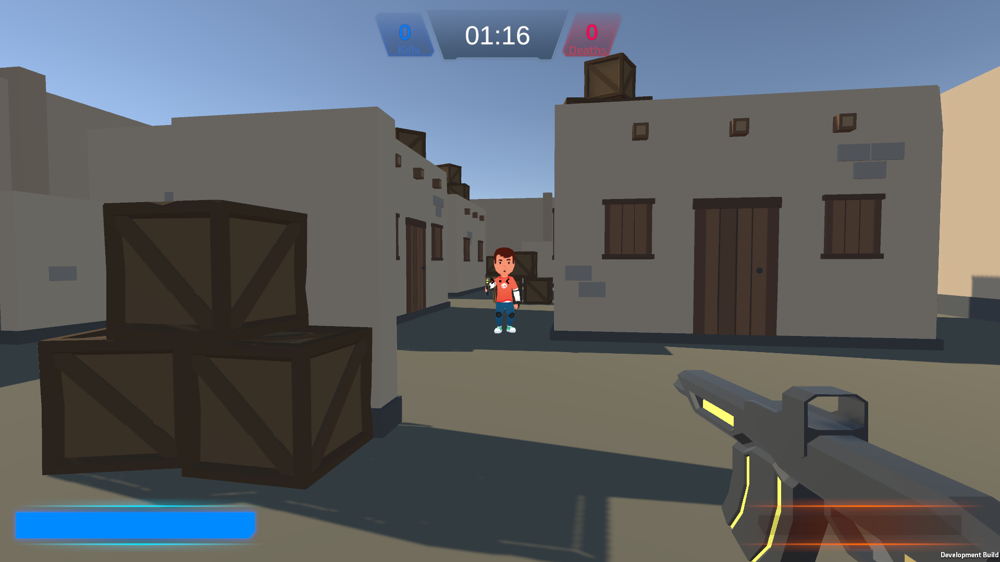
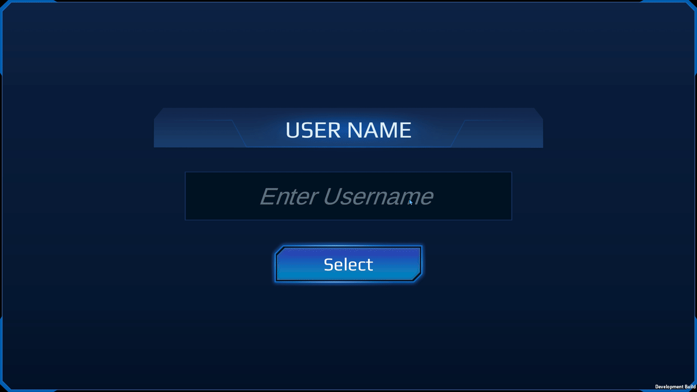

FPSFrenzy
First-Person Shooter with Online Capabilities
Background
FPSFrenzy has been a cornerstone for my journey so far.
One, this project was my first time developing a first-person shooter.
Second, this was also my first time implementing online networking into a game.
For such big feats, this was a pretty difficult project to tackle. But I'm proud of what I've accomplished.
At first, the idea was to create a simple first-person shooter, with low poly textures, shooting at AI.
However, I wanted to go bigger since I've worked on AI already. So I decided to implement an online multiplayer feature.

Players can join a lobby and play against each other. Initially, for 1v1-type scenarios.
Each player can choose between 3 weapons: a pistol, a submachine gun, and a sniper rifle.
A player wins by getting the most amount of kills before the timer runs out.
Technologies Used
What I Learned
Online Networking
FPSFrenzy was my first real dive into online multiplayer,
and let me tell you it was equally rewarding and frustrating.
For this project, I worked with Photon, a networking tool that’s pretty
beginner-friendly but still packed with complexities when it comes to real-time multiplayer.
From synchronizing player movements to managing game states,
Photon helped me handle a lot of the heavy lifting,
but it still required plenty of fine-tuning to get things just right.
One of the biggest challenges was syncing animations and player movement across the network.
It’s not just about sending data; it’s about sending the right data at the right time.
For example, player positions needed frequent updates to look smooth for other players,
but not so frequent that it bogged down the network.
I spent hours tweaking this balance and designing a protocol to prioritize critical actions
like shooting, jumping, or switching weapons, while cutting back on non-essential updates.
 Another tricky part was making sure all players saw the same UI elements
in real time—like scores, timers, and lobby data.
Even something as simple as displaying a player’s name or a server title involved precise timing.
The solution?
I carefully structured when and how this data was sent:
typically when a match started, a player joined, or a significant event occurred.
It sounds simple, but ensuring all players saw the same
thing without delays was a constant test of patience and attention to detail.
Another tricky part was making sure all players saw the same UI elements
in real time—like scores, timers, and lobby data.
Even something as simple as displaying a player’s name or a server title involved precise timing.
The solution?
I carefully structured when and how this data was sent:
typically when a match started, a player joined, or a significant event occurred.
It sounds simple, but ensuring all players saw the same
thing without delays was a constant test of patience and attention to detail.

Implementing these systems taught me a lot about the complexities of real-time networking
and the importance of optimizing data flow to maintain a seamless multiplayer experience.
Photon’s tools were incredibly helpful for these tasks,
but the process also emphasized the need for custom solutions
tailored to specific game mechanics and player expectations.
Anyone who's trying to implement an online multiplayer
feature with Unity should definitely check out Photon. It's a great tool to use.